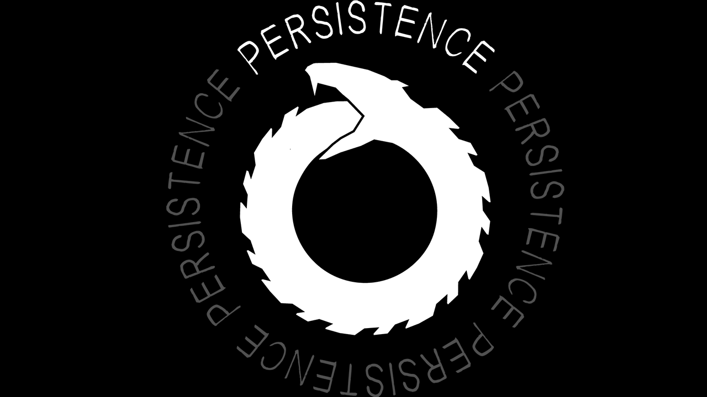
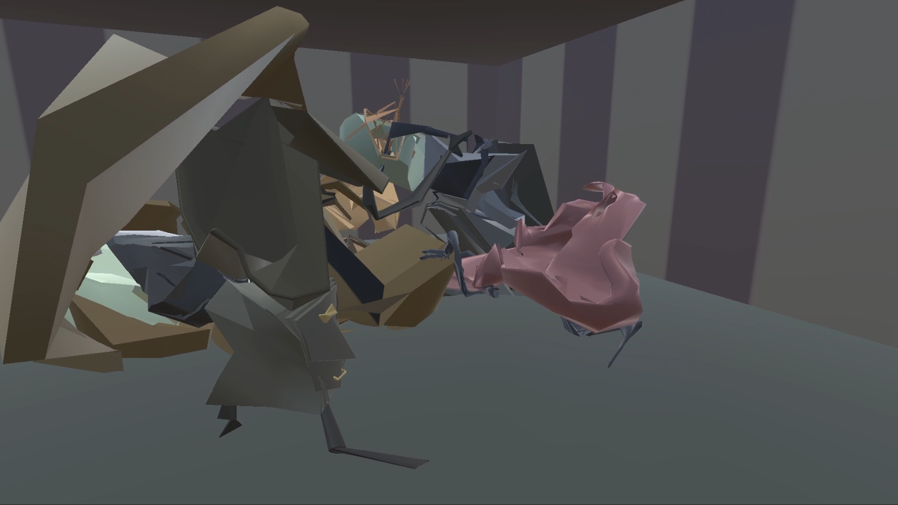

◯
◯
Context

This was a project I made while attending UC Santa Cruz for our Jam 2 project.
We were given the prompt "a room without walls" where we decided to design the game around the theme of "infinity". The player would navigate through an infinite hallway where theonly way to escape would be by collecting pieces of an ouroboros.
Work and Experience

I worked as a 3D Modeler and edited the second to final room
This project was pretty small as it was only a game jam, but we received a lot of praise for its execution.
I was relatively new to Blender at this point so it was difficult to get the models right. I wish I was able to do more, but for a project done in a couple weeks with 6 other people I know I had to spread the work load evenly.
◯
◯
Contributions | Modeling